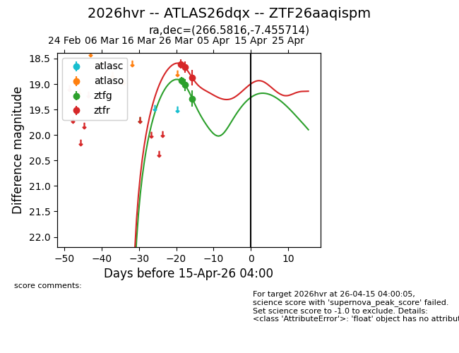
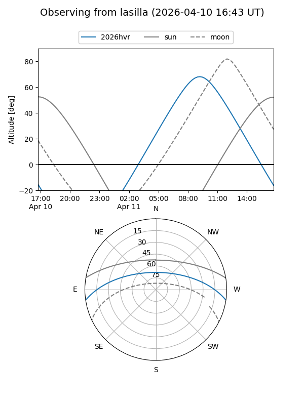
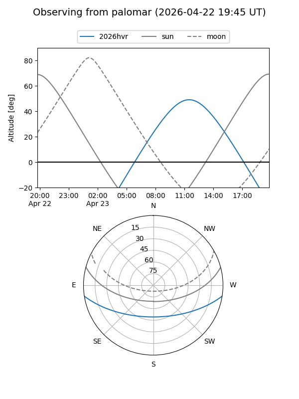
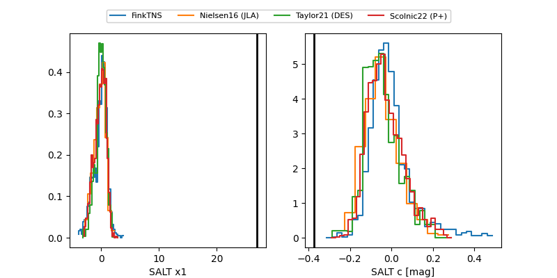

2026hvr
Target 2026hvr at 2026-04-15 04:08
Aliases and brokers:
FINK: link
Lasair: link
ALeRCE: link
TNS: link
YSE: link
alt names
ZTF26aaqispm (ztf,fink_ztf)
2026hvr (tns,yse)
ATLAS26dqx (atlas)
Coordinates:
equatorial (ra, dec) = 266.5816,-7.45571
equatorial (HMS+DMS) = 17:46:19.59,-07:27:20.57
galactic (l, b) = (18.6543,+10.84674)
Flags:
Photometry:
last ztfg=19.29, ztfr=18.88
3 ztfg, 3 ztfr detections
Lightcurve

Visibility


Additional plots
